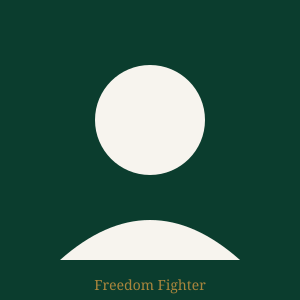
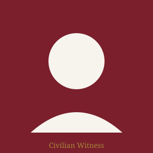
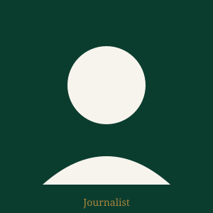

Interviews
This collection gathers first-hand testimonies from those who lived through the 1971 Liberation War: freedom fighters, civilian witnesses, journalists, and volunteers. Each entry includes a short biography and a recorded testimony that can be played directly on this page.

Abdul Karim
Guerrilla Fighter, Sector 8

Rahima Begum
Civilian Witness, Dhaka

David Whitfield
Foreign Correspondent
Dr. Farida Yasmin
Medical Volunteer

Major Ziaur Rahman
Sector Commander, Bengal Regiment